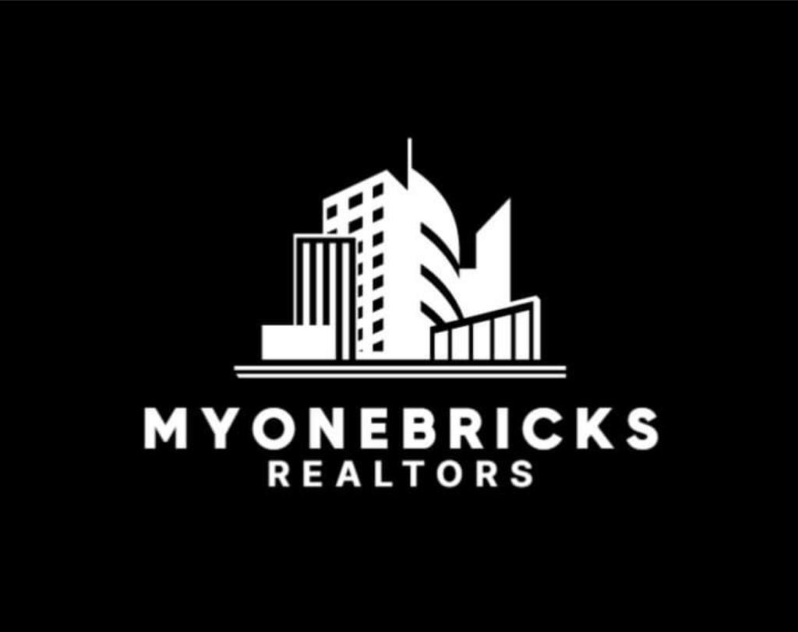

MyOneBricks Realtors
We are consulitg people in various domain, for buying, selling in property and also we are going to bring AI innovation for real estate market.
for more details please clickWe are consulitg people in various domain, for buying, selling in property and also we are going to bring AI innovation for real estate market.
for more details please clickFounded with a vision to merge artificial intelligence with real-world expertise, we bring together innovation, insights, and integrity to create smarter, data-driven real estate experiences. Our approach goes beyond traditional brokerage. We leverage AI-powered analytics, predictive market modeling, and digital automation to understand market movements, evaluate true property value, and match clients with the best investment opportunities. Every recommendation we make is backed by data — ensuring transparency, speed, and confidence in decision-making.
In Pune, we specialize in the city’s rapidly evolving real estate corridors such as Hinjewadi, Baner, Balewadi, Kharadi, and Wakad, where tech-driven growth and infrastructural development continue to attract investors and homebuyers alike. From affordable housing to luxury high-rises and commercial spaces, our portfolio captures Pune’s diverse market potential.
In Mumbai, India’s financial capital, we focus on premium residential, redevelopment, and commercial projects across key micro-markets such as Bandra, Andheri, Powai, Thane, and Navi Mumbai. Our strong developer network and market intelligence help clients navigate the city’s dynamic property ecosystem with precision and trust.
At MyOneBricks, innovation drives everything we do — from virtual property tours, smart lead generation, automated follow-ups, and digital documentation to AI-based valuation tools that predict long-term appreciation potential.
At MyOneBricks Realtors, we’re redefining real estate through the power of Artificial Intelligence and innovation. Our technology-driven approach transforms the way properties are discovered, evaluated, and managed — making the entire real estate journey smarter, faster, and more transparent.
With AI-powered insights, we analyze market trends, pricing data, and buyer behavior to help clients make informed investment decisions. Our intelligent tools assist in property matching, predictive analytics, and virtual visualization — ensuring every customer finds the perfect property with precision and ease.
Innovation lies at the heart of everything we do — from smart lead generation and digital property tours to data-driven valuations and automated workflows that save time and maximize value.
At MyOneBricks, we combine the human touch of expert realtors with the efficiency of cutting-edge technology — creating a seamless experience that’s truly the future of real estate.
If the form doesn't display correctly on your device, open it in a new tab.